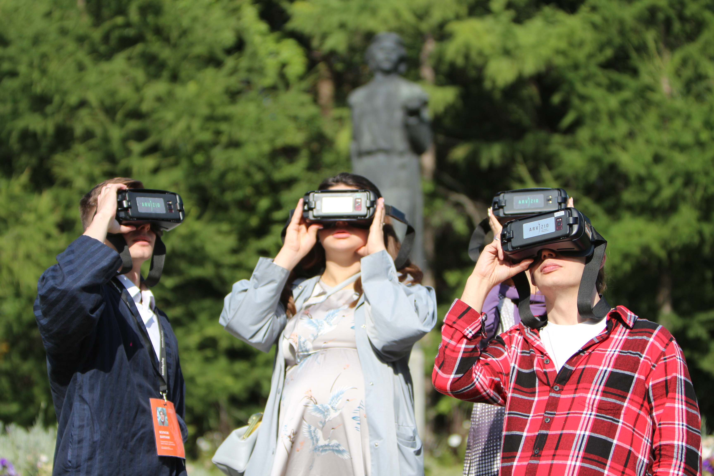
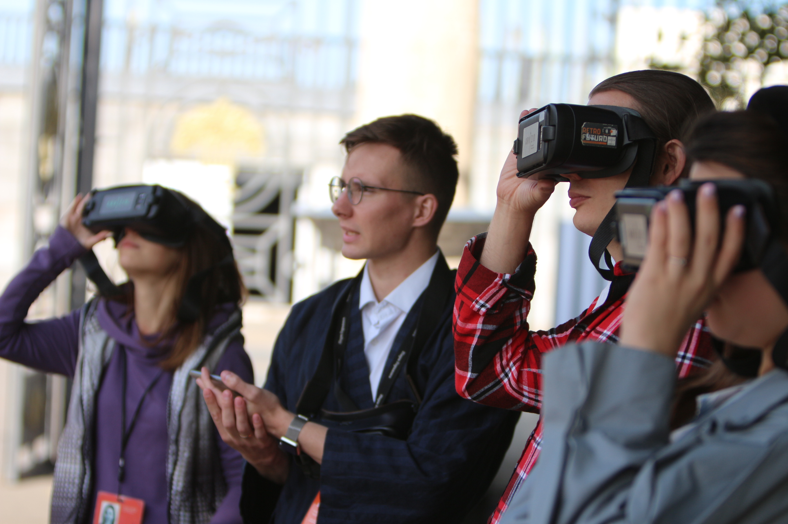

Исследуем, как предметы, звук и образ помогают человеку почувствовать историю и место.
2023–2026 · Проекты с Олей
От новых моделей — к первым историям
Материалы расположены от новых к ранним: от моделей для дома и игры — к тактильному рассказу об истории парка и первой серии предметов.
2023–2024 · Парк Горького
«Зажигая историю»
Вместе с Олей мы создали целую серию ароматических свечей, связанных с территорией и историей Парка Горького. Для каждой композиции мы сами придумывали сценарий отдушки — как передать ароматом характер места и его прошлое. В 2023 году свечи стали памятными подарками для друзей, близких и коллег.
Работая в историко-культурном секторе Парка Горького, я искал, как рассказывать об исчезнувших объектах парка так, чтобы их можно было не только увидеть на фотографии. Для авторской экскурсии мы подготовили миниатюрную 3D-копию утраченной скульптуры. Её можно изучать руками — так гости замечают форму и детали, которые не разглядеть на старых снимках.
Мы проверили модель на реальных экскурсиях: особенно живой отклик она получила у семей с детьми и незрячих посетителей. С этой реализованной работы начался наш путь в 3D-моделировании.
Тактильная копия для экскурсии · фото из эссеПодготовка модели к печати · фото из эссе
Участвовал в премьере VR-экскурсии по Парку Горького, созданной парком совместно с ARVIZIO. В VR-очках гости могли увидеть утраченные символы парка и его историю.

Знакомство гостей с VR-экскурсией

Премьера экскурсионного проекта · 29 сентября 2023
 Смотреть проект на Behance ↗
Смотреть проект на Behance ↗


:format(webp)/https://fbi.cults3d.com/uploaders/16234658/illustration-file/fd2e5b9d-26db-4cb4-8069-8ba1074d31c4/photo_2025-12-13_22-36-44.jpg)

:format(webp)/https://fbi.cults3d.com/uploaders/16234658/illustration-file/b7c997bb-e9a1-4a80-b857-cb35dcc4f6d1/Plumbob.jpg)